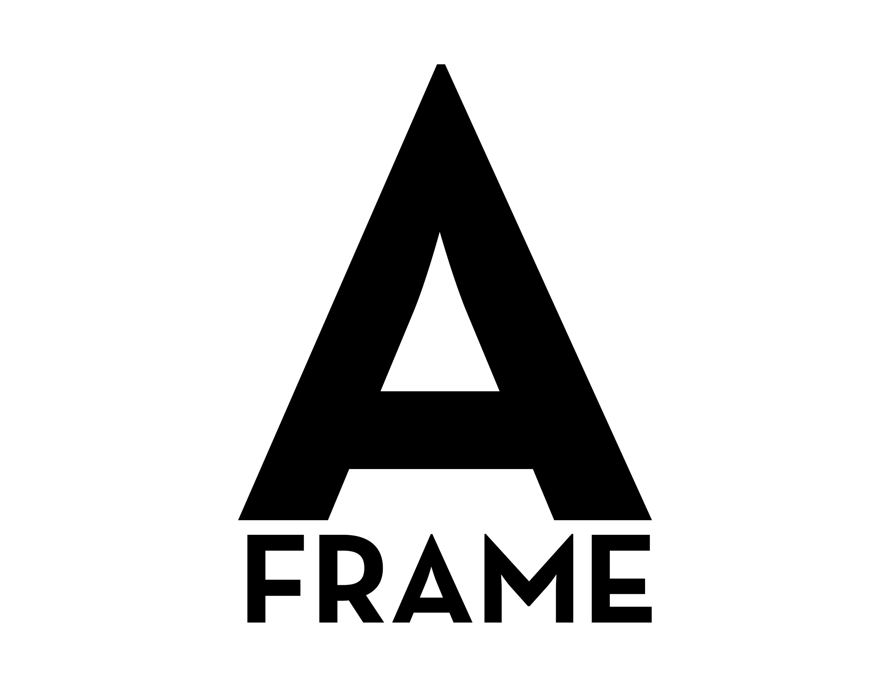

La Realidad Aumentada (RA) es una tecnología que superpone contenidos digitales (3D, textos, imágenes, sonido, etc.) sobre el mundo real, a través de dispositivos como móviles, tablets, gafas o visores especializados, enriqueciendo así la percepción del entorno físico sin sustituirlo por completo
Adobe Aero
Adobe Aero es una herramienta de autoría de RA que te permite crear experiencias interactivas y visualmente impactantes sin necesidad de escribir código. Se integra con otras aplicaciones de Adobe como Photoshop e Illustrator, lo que facilita el uso de tus propios recursos gráficos.
¿Qué puedes hacer?
Colocar modelos 3D y animaciones en el mundo real.
Añadir interactividad, como hacer que un objeto se anime al tocarlo.
Crear presentaciones o experiencias interactivas.
Tutoriales y Recursos:
ZapWorks (Zappar)
ZapWorks es una plataforma completa para crear experiencias de Realidad Aumentada, Realidad Virtual y códigos QR. Ofrece una gama de herramientas, desde un editor de arrastrar y soltar para principiantes (ZapWorks Designer) hasta un editor de código para usuarios avanzados.
¿Qué puedes hacer?
Crear experiencias de RA basadas en imágenes (como un póster o un logo).
Diseñar experiencias de RA para el lanzamiento de productos, publicidad o educación.
Integrar videos, modelos 3D y elementos interactivos.
Tutoriales y Recursos:

A-Frame
A-Frame es un framework web de código abierto para crear experiencias de realidad virtual y aumentada con HTML. Es una excelente opción si tienes conocimientos básicos de desarrollo web. Permite crear escenas 3D interactivas directamente en el navegador.
¿Qué puedes hacer?
Construir escenas de RA simples directamente en una página web.
Crear experiencias de realidad virtual.
Personalizar cada aspecto de la experiencia usando código.
Tutoriales y Recursos: